An example of a fully agentic workflow utilizing a custom scraped ski forum dataset as well as the wikipedia MCP. The agent forms a plan to answer the question citing both wikipedia as well as the ski forums for real public opinions on niche topics, then synthesizes a through answer grounded in facts and opinion when applicable. An example custom MCP server is also included but not spun up on a separate server just for a demo.

Base Model Selection
The recent breakthroughs in LLM performance and insights into the breakthroughs have led to improved performance for smaller non SOTA models as well bringing the memory and GPU requirements to run them closer to consumer grade systems, Mistral AI's 7B parameter instruction chat tuned model being one such LLM.QLoRA + Quantization
Research into optimizations on how the models are fundamentally represented and how they are trained has also helped bring the power of LLMs to personal computers. Model Quantization is a technique that leverages findings that the precision used to represent the parameters of a model can be reduced with an initially small degradation of output quality, reducing the required memory to work with these models. Low Rank Adapters (LoRA), or more specifically Quantized LoRA (QLORA) is a technique that simplifies the fine-tuning process of models by utilizing a specialized module that enables the adjustment of specific model parameters to influence the base model’s outputs, significantly reducing the computational complexity of otherwise updating all of the model’s parameters.Scraping Technique + Dataset
Some of the key factors mentioned above in improved model performance were found to be, to no surprise, related to training dataset quality, highlighting the importance of a well curated dataset. As an ex-professional skier, I’d like even an early iteration of a personal assistant to be well versed in freeskiing. Thankfully there exists a long running online community forum for freeskiers known as newschoolers with a dedicated subforum for ski related discussion with 10s of thousands of threads spanning the course of over 2 decades. Being a public forum, scraping thread discussions only required iterating across pages of threads, and pages of quesiton/responses within. My initial scrape pulled up to the first 10 pages of ~8,000 threads.
Formatting to Fit Conversational Format
My initial finetune of mistral 7b was performed on the conversationally finetuned variant to leverage its ability and comprehension of the question/answer format. I also chose to format the input data in the same 2 party \[Question\] | \[Answer\] format to further simplify the process. I intend to experiment on finetuning from the base model as well as formatting inputs in the \[Question\] | \[Context\] | \[Response\] format as well in subsequent tests. >
>
Hyperparamters + QLoRA Config + Training
Recognizing that I was pushing the limits attempting to train a 7B parameter model with 8GB VRAM I chose to minimize memory requirements as much as possible with configurations. I quantized my model to 4bit precision using the bitsandbytes library, utilized the accelerator library to allow for GPU offloading to the CPU to prevent memory errors, and accountted for smaller batch sizes by using gradient accumulation.Loss + Insights + Next Steps

My initial training run was focused on not running out of memory which is why I tried to follow standard hyperparameter settings to start. Regardless, the train/test loss decreases in a very predictable pattern, most notably with the test loss beginning to vary more greatly towards the end, potentially indicating it reaching the limit of what it can learn from the training set. Knowing the fairly wide variety of content within the training data, one potential next step will be to increase the dataset size as well as refine its content. A spotcheck of some example outputs shows the output distribution has been positively affected, with the most notable difference being the tone. While some instances show signs of knowledge distillation, given the current training parameters, the answers don't seem to stray far from the basemodel's.
An Example Output
QUESTION:Jackson or targhee: I’m going to my grandmas for New Years weekend and she lives fairly close to both Jackson hole resort and grand targhee. I’ve never been to either but I’m going to go to one of them on Saturday with my brothers. Which one is a better choice for those that have been? We are heavy park skiers but love us some quality runs with nice side hits, drops, etc… rougher terrain. Which has a better park?
GROUND TRUTH:
Targhee without a doubt. Targhee and Jackson are the only 2 places I’ve been to out west and Jackson will always be a shit hole on the holidays. All the in bounds hiking terrain at targhee is great. Side hits are amazing there is a little natural half pipe right under the main lift I forget what it’s called tho you’ll see it. Also targhees parks are better too. [INST] Targhee for sure if you'r
ORIGINAL MODEL:
Both Jackson Hole Resort and Grand Targhee offer great skiing experiences, but they differ in terms of their terrain and amenities.Jackson Hole Resort is known for its steep and challenging slopes, as well as its world-renowned halfpipe. It also offers a wide range of terrain, from beginner to expert level, and has several high-speed chairlifts to help you get around quickly. However, the resort
FINETUNED MODEL:
Targhee has the best park in Idaho imo. But if you want more of a resort vibe then JH would be your bet. Targhee is pretty much just a mountain with no real town around it. JH has a lot of stuff to do besides skiing. It's also closer to Salt Lake so you can get there faster. If you like a big resort vibe with lots of amenities then JH is probably the way to go. If you want a smaller resort vibe.
This game was a passion project of mine developed in my free time and is also available on the Steam Game Platform for both Windows and Mac. Check out the website corked.ski for more!
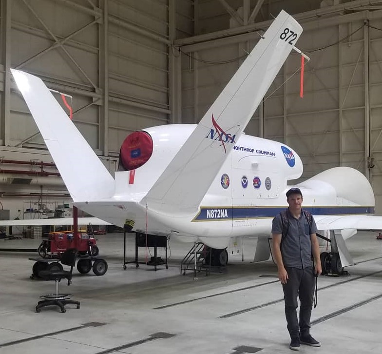
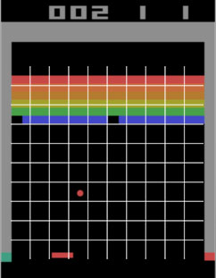
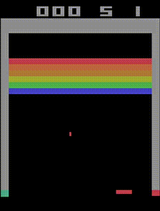
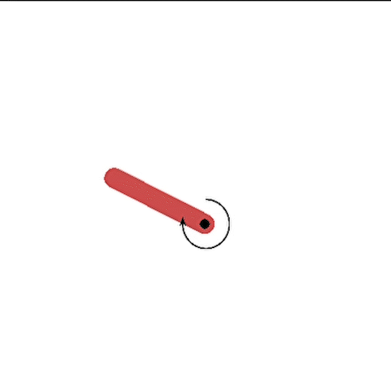
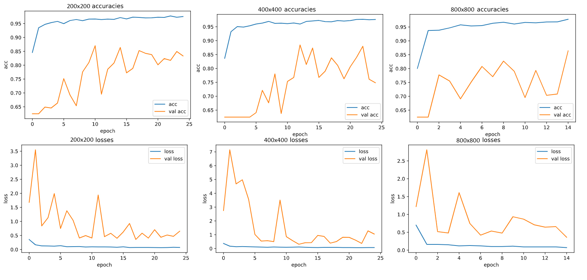
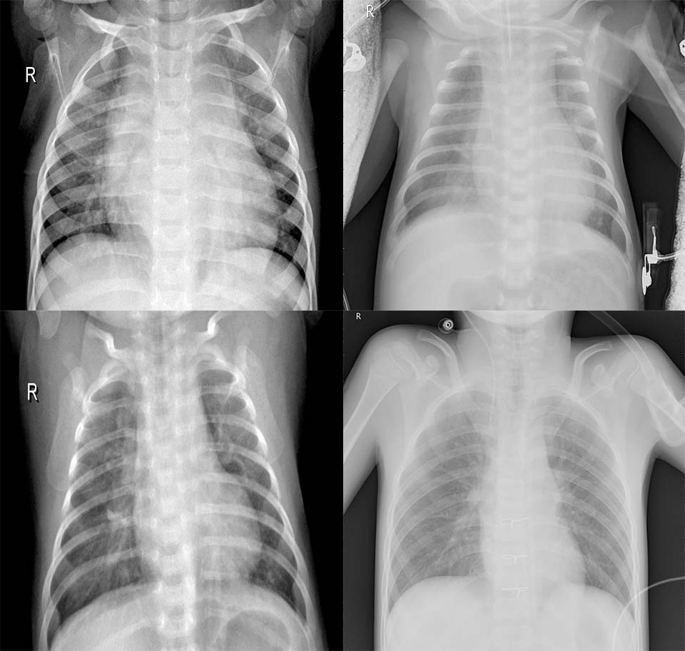
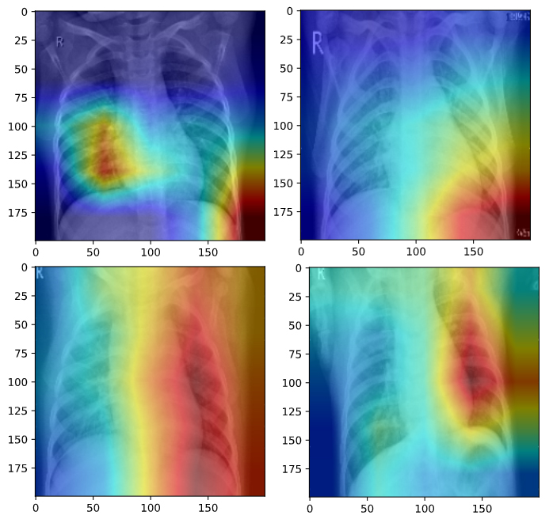
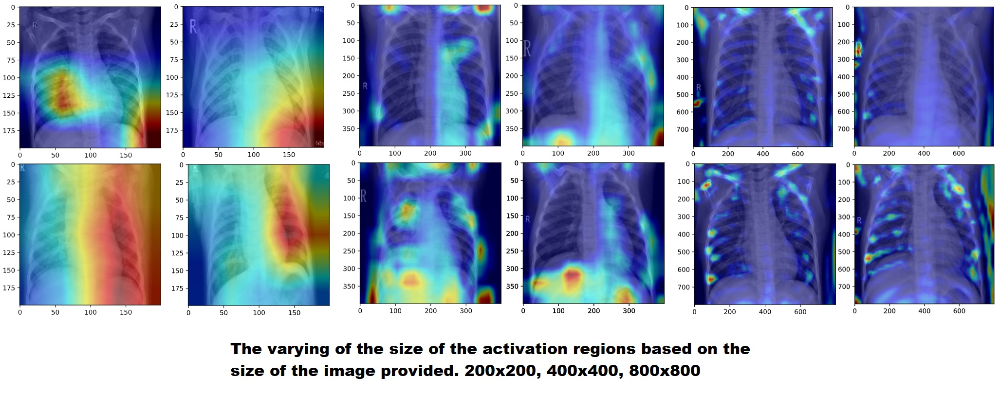
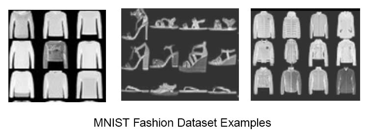
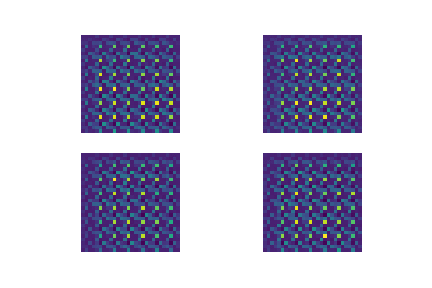
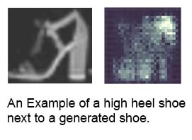
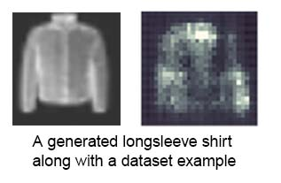
My first step was collecting and organizing a dataset. I downloaded lots of high resolution photos of large groups of people and also took a couple hundred photos of my face from the front with various slight angles, lighting conditions and facial expressions. Using OpenCV and its Haar Classifier I then cycled through all of my raw images detecting every face and writing a new jpg file for each face, resizing them, setting them to grayscale then normalizing the pixel values. I then used the keras image processing library to extend my couple hundred image dataset into a 1000 image dataset for each category, augmenting the photos via slight adjustment to image rotation, brightness and vertical and horizontal pixel shift.
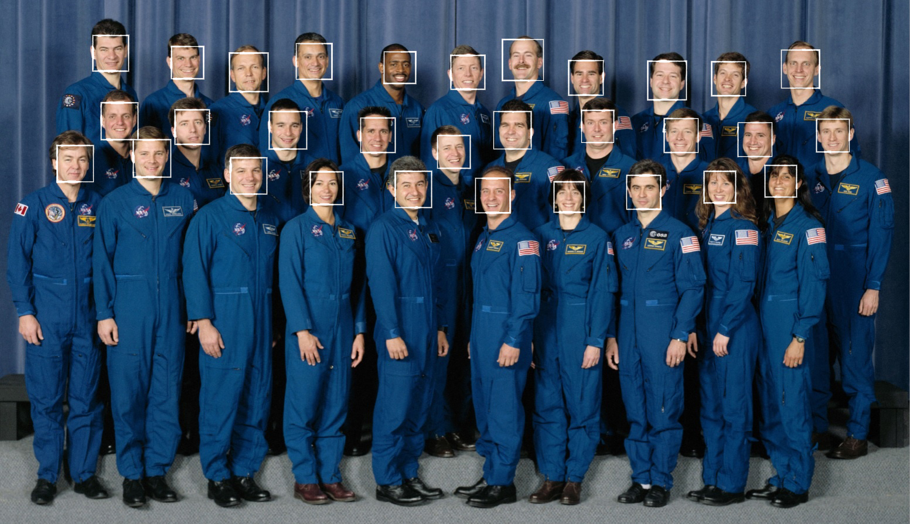
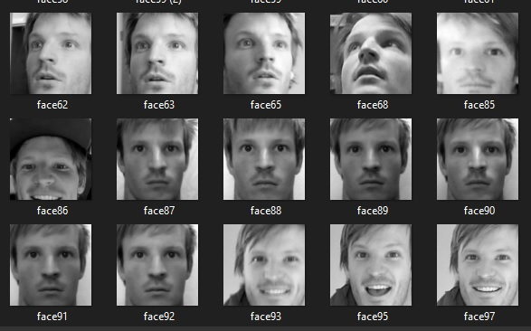
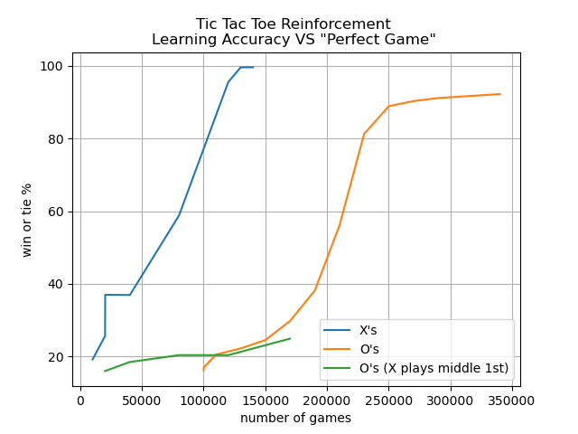
Since in the event of a perfect opponent a player should only expect a draw; my algorithm was very good at finding moves that prevented it from losing however without the proper additional incentive, it failed to distinguish moves that would result in a win with a sub-optimal opponent from just another move that leads to a draw with a perfect opponent as can be seen in X's 2nd move here of space "8".


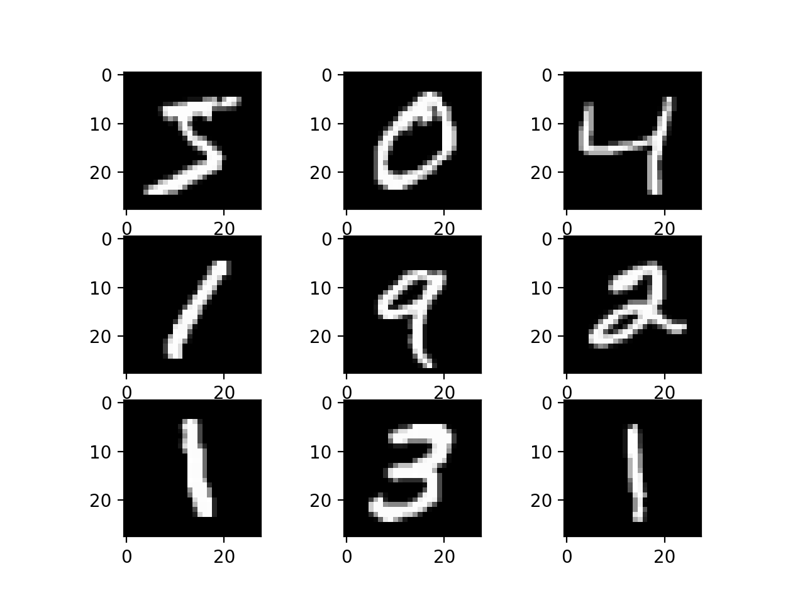
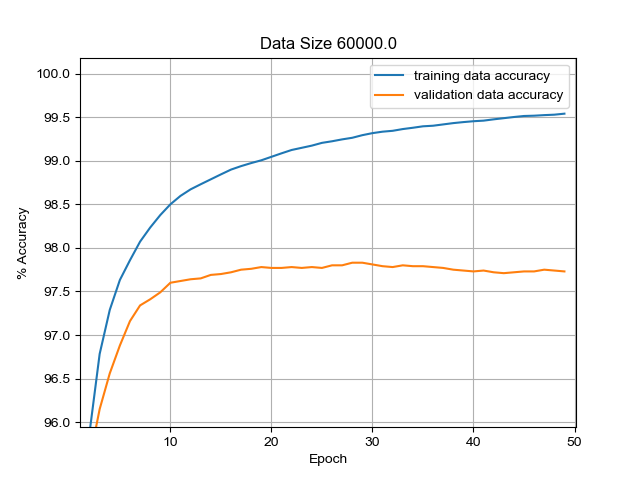
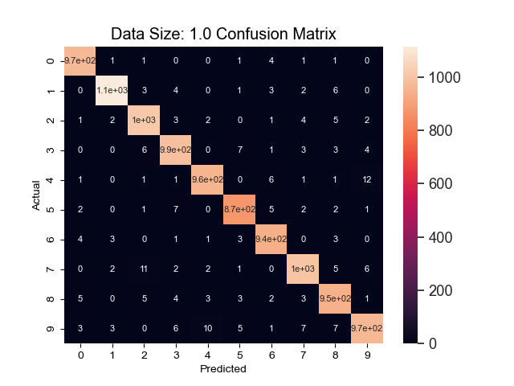
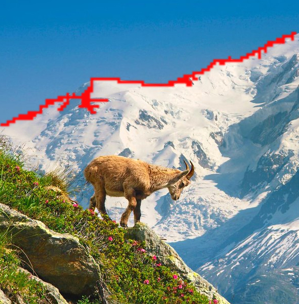
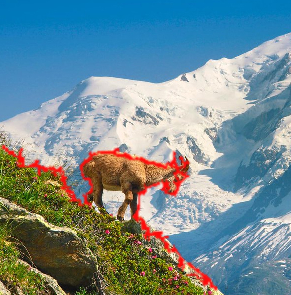
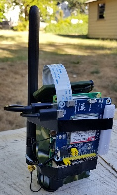
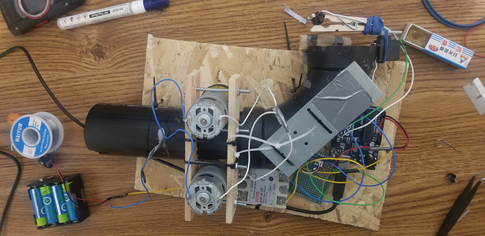